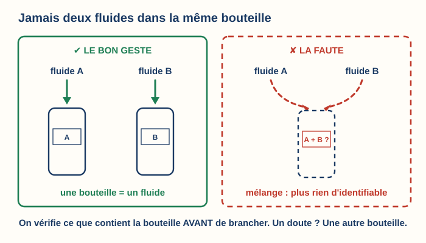
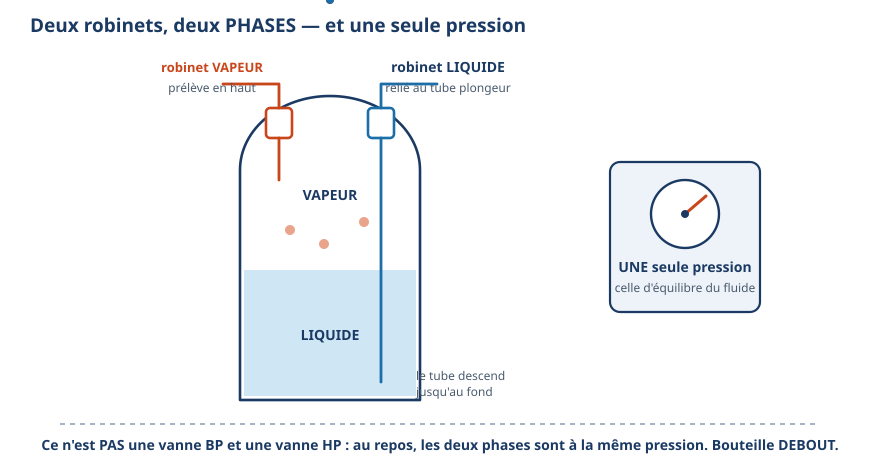
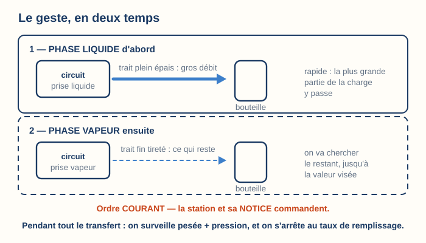
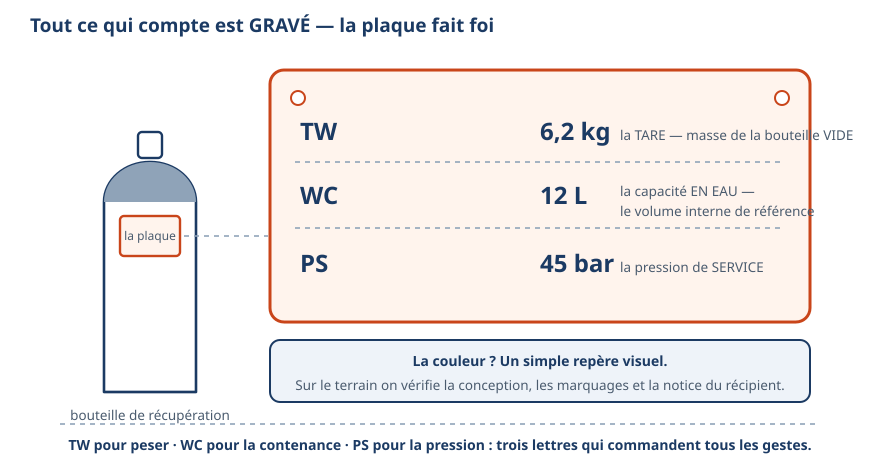
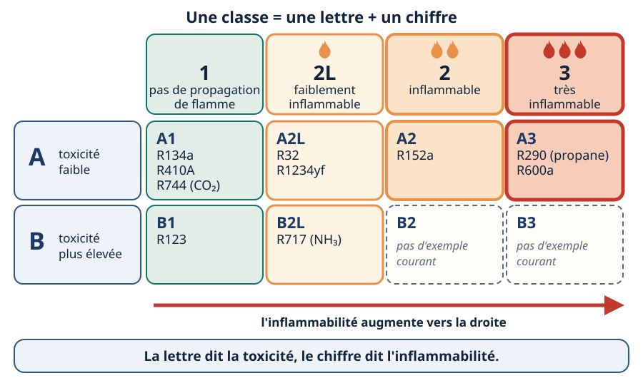
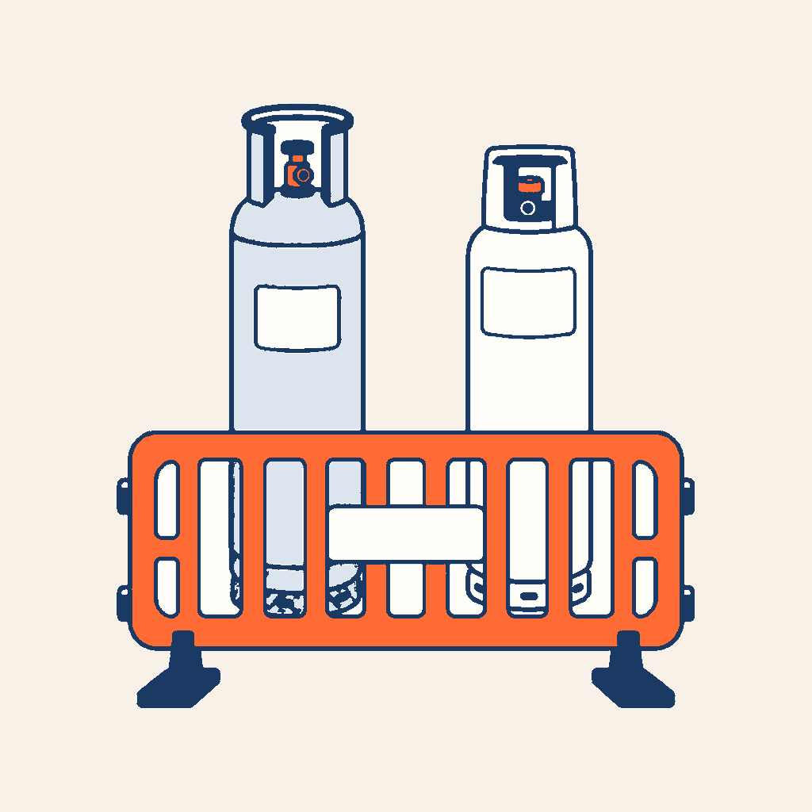

Les bouteilles de fluide
Avant de brancher un flexible, vous devez savoir quelle bouteille vous avez dans les mains, par quel robinet le fluide va sortir, et combien elle peut en recevoir.
1. Les bouteilles du métier
| Bouteille | Ce qu'elle contient | Ce que vous en faites |
|---|---|---|
| Fluide neuf | Un seul fluide, propre, nommé sur l'étiquette. | Vous chargez l'installation. Vide, elle repart chez le fournisseur pour être remplie à nouveau. |
| Récupération | Le fluide retiré d'une installation. Il peut contenir de l'huile, de l'humidité ou de l'air. | Vous y transférez le fluide d'une machine. Un seul fluide par bouteille, toujours. |
| Azote | De l'azote sec : ce n'est pas un fluide frigorigène. Sa pression est bien plus forte que celle d'un circuit. | Vous contrôlez l'étanchéité et vous brasez sous azote, toujours avec un mano-détendeur (l'appareil qui abaisse la pression de la bouteille à la valeur voulue). |
| R-744 (CO₂) | Un fluide dont la pression est beaucoup plus forte que celle des autres fluides. | Vous chargez ou récupérez du R-744 avec une bouteille, des flexibles et des manomètres prévus pour cette pression. |

Les bouteilles de fluide inflammable ont leur écran : écran 7. La bouteille d'azote a sa propre station : la bouteille d'azote et son mano-détendeur.
2. La bouteille jetable est interdite
Une bouteille jetable ne se recharge pas. Quand on la croit vide, il reste toujours du fluide dedans, et ce fluide finit dans l'air.
Une bouteille rechargeable compte aussi comme jetable quand rien n'est prévu pour la rendre et la faire remplir à nouveau. C'est pour cela que vos bouteilles de fluide neuf sont consignées : vous les rendez au fournisseur, qui les remplit à nouveau.
Source : règlement européen sur les gaz fluorés, dit F-Gaz : règlement (UE) 2024/573, annexe IV, point 1, et article 11, paragraphe 3. L'interdiction date de 2007 ; le règlement de 2024 la reprend.
3. Deux robinets, deux phases

- Le robinet vapeur prend le fluide dans le haut de la bouteille, où se trouve la vapeur.
- Le robinet liquide est relié au tube plongeur, qui descend jusqu'au fond, dans le liquide.
Pour savoir quel robinet est lequel, lisez le mot ou la lettre marqué sur le robinet ou à côté, par exemple LIQUIDE ou L, GAZ ou G. La couleur du volant n'est qu'un repère visuel.
4. Le tube plongeur
Le fluide sort de l'endroit où le tube va le chercher. Une bouteille debout a toujours son liquide en bas et sa vapeur en haut.
| Bouteille debout | Ce qui sort |
|---|---|
| Robinet relié à un tube plongeur | du liquide |
| Robinet sans tube plongeur | de la vapeur ; pour obtenir du liquide, il faut retourner la bouteille, tête en bas, comme l'indique son étiquette |
Avant de brancher, lisez l'étiquette : elle dit si la bouteille a un tube plongeur et comment la tenir.

5. La plaque

| Repère | Ce qu'il veut dire | À quoi il vous sert |
|---|---|---|
| TW | La tare : la masse de la bouteille vide, en kg. | Peser le fluide : masse du fluide = masse lue sur la balance − TW. |
| WC | La capacité en eau : le volume intérieur, en litres. | Calculer la charge maximale (écran 6). |
| PS | La pression de service maximale, en bar. | Savoir quelle pression la bouteille supporte en service. Les fluides acceptés sont écrits sur son étiquette ou sa notice. |
La couleur de la bouteille ne prouve jamais le fluide qu'elle contient. Vous lisez l'étiquette et la plaque.
6. La charge maximale (la masse maximale de fluide)

Une bouteille ne se remplit jamais à ras. Quand la température monte, le liquide gonfle. S'il n'a plus de place, la pression grimpe très vite et la bouteille peut éclater.
La masse maximale de fluide dépend du fluide. Vous la trouvez de deux façons :
- elle est écrite sur l'étiquette ou la notice de la bouteille, pour ce fluide : vous la lisez ;
- l'étiquette ou la notice donne le taux de remplissage de ce fluide, en kg par litre : vous calculez.
Si rien n'est écrit, demandez la valeur au fournisseur de la bouteille avant de la remplir. On ne remplit jamais au jugé.
masse maximale (kg) = WC (L) × taux de remplissage (kg/L)
masse maximale = 12 × 0,80 = 9,6 kg
Sur la balance, on ne dépasse jamais : TW + masse maximale = 6,2 + 9,6 = 15,8 kg
Vous arrêtez donc le transfert avant que la balance n'affiche 15,8 kg.
Le 0,80 de l'exemple est une valeur d'exercice. Sur le terrain, lisez le taux ou la masse maximale de votre fluide sur l'étiquette de votre bouteille.
Beaucoup de bouteilles de récupération ont une troisième prise : un flotteur, relié à la station de récupération, qui arrête la station quand le liquide monte trop haut. C'est une aide ; la balance reste votre contrôle.
La soupape s'ouvre si la pression devient dangereuse. C'est un dernier secours : elle ne vous autorise jamais à remplir davantage.
7. Les bouteilles de fluide inflammable
Les fluides A2L (R-32, R-1234yf…, peu inflammables) et A3 (R-290, R-600a…, très inflammables) brûlent. Leurs bouteilles se reconnaissent :
- une ogive rouge (l'ogive est le haut arrondi de la bouteille) : elle vous alerte sur un gaz inflammable, et c'est l'étiquette qui nomme le fluide ;
- un raccord spécifique, le plus souvent à filetage à gauche (il se visse dans l'autre sens) : il empêche d'y brancher un outil qui n'est pas prévu pour ce fluide.
Ces bouteilles existent en petites contenances : vous ne transportez et ne stockez que la quantité de gaz inflammable dont vous avez besoin.

Pour lire une classe de sécurité : Classes de sécurité. Pour la charge qu'un local accepte : Charge maxi A2L.
8. Ranger et transporter

- Debout, attachée à un support fixe (sangle ou chaîne), pour qu'elle ne tombe pas.
- Robinets fermés, chapeau de protection en place.
- Jamais au soleil ni près d'une source de chaleur, jamais dans un véhicule fermé en plein soleil.
- Jamais chauffée : ni flamme, ni eau chaude, ni radiateur.
- Dans un local aéré, loin de ce qui peut enflammer un fluide inflammable.
Je vérifie
Répondez, puis ouvrez la correction. L'écran indiqué contient la réponse.
1. Vous devez vider une installation au R-404A avant réparation. Quelle bouteille prenez-vous ?
Correction (écran 1)
Une bouteille de récupération neuve, ou déjà réservée au R-404A. Jamais une bouteille qui a contenu un autre fluide.2. Le robinet relié au tube plongeur donne du liquide ou de la vapeur, bouteille debout ?
Correction (écrans 3 et 4)
Du liquide : le tube va le chercher au fond.3. Le robinet liquide et le robinet vapeur sont-ils à des pressions différentes ?
Correction (écran 3)
Non. Les deux sont à la même pression, celle du fluide dans la bouteille.4. Une bouteille porte TW 10,5 kg et WC 20 L. Pour l'exercice, son étiquette donne un taux de remplissage de 0,90 kg/L. Quelle masse maximale de fluide ? Quelle masse la balance ne doit-elle jamais dépasser ?
Correction (écran 6)
Masse maximale = 20 × 0,90 = 18 kg. Balance : 10,5 + 18 = 28,5 kg au plus.5. Pourquoi une bouteille jetable de R-134a est-elle interdite ?
Correction (écran 2)
Il reste toujours du fluide dedans quand on la jette, et ce fluide part dans l'air. Elle est interdite à la vente depuis le 4 juillet 2007.6. Le flexible de votre manifold ne se raccorde pas sur une bouteille de R-32. Que faites-vous ?
Correction (écran 7)
Vous prenez un flexible prévu pour ce fluide. Le raccord spécifique est une sécurité : jamais d'adaptateur.7. Une bouteille pèse 15,1 kg sur la balance. Sa plaque indique TW 6,2 kg. Quelle masse de fluide contient-elle ?
Correction (écran 5)
15,1 − 6,2 = 8,9 kg de fluide.Je m'entraîne
- Mission bouteilles : choisir, prélever, peser, décider.
- Détective, la bouteille de récupération : laquelle prendre sur l'étagère.
- TP récupération : la station, la pesée, le tirage au vide.
Repères formateur
CAP IFCA : C4.2 Manipuler le fluide frigorigène et les huiles ; S0.2 Gestion de l'environnement du site et des déchets.
Bac Pro MFER : S4.1.2 Les fluides pour circuits frigorifiques ; S7.2.3 La sécurité sur site ; S2.4.2 Les déchets.
TP Monteur dépanneur frigoriste : CP2, CP5.
Attestation d'aptitude : 5.02, 5.05, 5.06.
Aucun taux de remplissage réglementaire n'est donné dans cette station : les valeurs 0,80 et 0,90 kg/L sont des valeurs d'exercice. Interdiction des bouteilles non rechargeables : règlement (UE) 2024/573, annexe IV point 1 (4 juillet 2007) et article 11 § 3. Version du 28/10/2026, sans narration ; station des couleurs des bouteilles prévue à part.